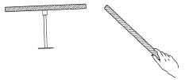
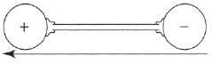
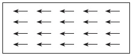

Burada da, çok basit olgulardan başlayarak ve sonra onların teorik açıklamasını araştırarak, daha önce tuttuğumuz yolu izleyeceğiz.
1) Uzun iki mıknatıs (magnet) çubuğu var. Biri, alttan ve merkezinden, hareket edebilecek konumda askıya alınmış; öbürü ise elimizde duruyor. [Şekil-28] İki mıknatısın uçları, aralarında kuvvetli bir çekim olduğu fark edilecek biçimde birbirine yaklaştırılıyor. Bu, her zaman yapılabilir.

[Şekil-28]
Hiç çekme olmazsa, mıknatısı çevirip öbür ucunu denemeliyiz. Çubuklar biraz olsun mıknatıslı iseler, bir sonuç alınır. Mıknatısların uçlarına, onların kutup’ları denir. Deneyimizde, elimizdeki mıknatısın kutbunu öbür mıknatıs boyunca hareket ettiririz. Çekimde bir azalma fark edilir ve kutup, askıdaki mıknatısın ortasına ulaşınca hiçbir kuvvet belirtisi kalmaz. Kutup aynı yönde ilerletilirse, askıdaki mıknatısın ikinci ucunda en büyük yeğinliğine varan bir itme gözlenir.
2) Yukarıdaki deney, bize bir başka deneyi düşündürür. Her mıknatısın iki kutbu vardır. Onların birini yalıtamaz mıyız? Akla şu geliverir: Bir mıknatısı iki eşit parçaya kırmak! Bir mıknatısın kutbu ile öbür mıknatısın ortası arasında hiçbir kuvvet bulunmadığını görmüştük. Ama bir mıknatısı gerçekten ikiye kırmanın sonucu, bizi şaşırtan, hiç beklemediğimiz bir şey olur. l’in altında anlattığımız deneyi, bir mıknatısın yarısını alttan askıya alıp yinelersek, sonuç tümüyle öncekinin aynı olur! Önceden magnetik kuvvetin en küçük belirtisi bile olmayan yerde, şimdi kuvvetli bir kutup vardır.
Bu olguları nasıl açıklamalı? Elektrik akışkanları teorisini örnek alarak bir mıknatıslılık teorisi geliştirmeye çalışabiliriz. Bize bunu düşündüren olgu, burada da, durgun elektrik görüngülerindeki gibi, itme ve çekme olmasıdır. Yükleri eşit, biri artı ve öbürü eksi yüklü iki küresel iletken düşününüz. Burada “eşit”, aynı salt değeri olmak anlamındadır; örneğin +5 ile -5’in salt (absolute) değerleri eşittir. Bu kürelerin bir yalıtkanla, bir cam çubukla, birbirine bağlandığını varsayalım. Bu düzen, basit çizgilerle, eksi yüklü iletkenden artı yüklüye yönelmiş bir okla gösterilebilir. [Şekil-29] Bu şeyin tümüne, elektriksel kutup-çifti (dipole) diyeceğiz.

[Şekil-29]
Böyle bir kutup-çiftinin, 1. deneydeki mıknatıs çubukları gibi hareket ettirilebileceği bellidir. Bu buluşumuzu gerçek bir mıknatıs örneği olarak düşünürsek, magnetik akışkanların da varolduğunu kabul ederek, bir mıknatısın, uçlarında farklı iki çeşit akışkan bulunan bir magnetik kutup-çiftinden başka bir şey olmadığını söyleyebiliriz. Bu basit teori, elektrik teorisini örnek alarak, birinci deneyin açıklanmasına elverişlidir. Bir uçta çekme, öbür uçta itme, ortada ise eşit ve karşıt kuvvetlerin dengelenmesi vardır. Peki ama, ikinci deney için ne demeli? Elektriksel kutup-çiftindeki cam çubuğu ikiye kırarak, yalıtılmış iki kutup elde ederiz. Aynı şey, ikinci deneyin sonuçlarının tersine, magnetik kutup-çiftinin demir çubuğu için de geçerli olmalıdır. Bu çelişki, bizi biraz daha ince bir teori geliştirmeye zorlar. Son modelimizin yerine, mıknatısımızın ayrı kutuplara parçalanamayan çok küçük öğesel kutup-çiftlerinden oluştuğunu düşünebiliriz. Düzenleniş, mıknatısın tümünde başattır; çünkü bütün öğesel kutup-çiftleri aynı doğrultuya yönelmiştir. [Şekil-30] Bir mıknatısı parçalara ayırmanın, yeni uçlarda neden yeni kutupların ortaya çıkmasına yol açtığını ve bu daha geliştirilmiş teorinin, neden 1. deneyin olgularını olduğu kadar 2’ninkileri de açıkladığını görüveriyoruz.

[Şekil-30]
Bu basit teori ile birçok olgu açıklanır ve teorinin geliştirilmesi gereksiz görünür. Bir örnek verelim: Biliyoruz ki, mıknatıs demir parçalarını çeker. Neden? Bayağı bir demir parçasında iki magnetik akışkan karışık olarak bulunur, bu yüzden tek yanlı bir etkileri görülmez. Demir parçasına bir artı kutup yaklaştırılırsa, bu, akışkanlara bir “ayrılma komutu” gibi etki yapar; demirin eksi akışkanını çeker ve artı akışkanını iter. Bunun sonucu, demir ile mıknatıs arasındaki çekimdir. Mıknatıs uzaklaştırılırsa, akışkanlar, dış kuvvetin verdiği komutun sertliğine göre, az ya da çok eski durumlarına döner.
Problemin nicel yanı üzerine pek az şey söylenmek gerekir. Mıknatıslanmış ve çok uzun iki demir çubuk kullanarak, kutuplarının birbirine yaklaştırıldığı sıradaki çekimlerini (ya da itimlerini) inceleyebiliriz. Çubuklar yeterince uzunsa, öbür uçlarının etkisi önemsenmeyebilir. Çekim ya da itim, nasıl oluyor da, kutuplar arasındaki uzaklığa bağlı oluyor? Coulomb deneyinin verdiği yanıt, bu uzaklığa bağlılığın, Newton’un gravitation yasasındakinin ve Coulomb’un durgun elektrik (elektrostatik) yasasındakinin aynı olduğudur.
Bu teoride de, şu genel düşünüşün uygulandığını görüyoruz: Bütün görüngüleri, değişmez tanecikler arasında etki gösteren ve yalnız uzaklığa bağlı olan çekici ve itici kuvvetlerle tanımlama eğilimi.
Burada, çok iyi bilinen bir olgunun anılması gerekiyor; çünkü ileride ondan yararlanacağız. Yer, pek büyük bir magnetik kutup-çiftidir. Bunun neden böyle olduğu konusunda en küçük bir açıklama belirtisi yoktur. Yer’in (-) magnetik kutbu, aşağı yukarı [coğrafi] Kuzey Kutbuna ve (+) magnetik kutbu, [coğrafi] Güney Kutbuna rastlar. Burada da, kutupların artı ve eksi diye adlandırılması keyfidir, ama bu kural bir kez konduktan sonra, bütün öbür durumlarda da kutupları adlandırmamızı sağlar. Düşey bir eksen üzerinde askıya alınmış mıknatıslı bir iğne, yerin magnetik kuvvetinin komutuna uyar. (+) kutbunu [coğrafi] Kuzey Kutbuna, yani, yerin (-) magnetik kutbuna yöneltir.
Şimdiye dek sözünü ettiğimiz elektriksel ve magnetik görüngülerde mekanikçi görüşü tutarlı olarak sürdürebildiysek de, bundan özellikle övünç ya da kıvanç duymak için hiçbir gerekçe yoktur. Teorinin bazı noktaları hayal kırıcı değilse de, kesinlikle yetersizdir. Yeni töz çeşitleri türetilmek gerekti: İki elektrik akışkanı ve temel magnetik kutup-çiftleri. Tözlerin sayısı kabardıkça kabarıyor!
Kuvvetler basittir ve aynı biçimde, gravitational, elektriksel ve magnetik kuvvetler olarak anlatılabilir. Ama bu basitlik uğruna ödediğimiz fiyat yüksektir: Yeni ağırlıksız tözler türetmek. Bunlar oldukça düzmece kavramlardır ve temel tözle, kütle ile, ilişkisizdir.